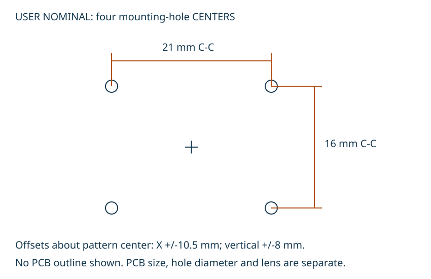

User-supplied nominal: horizontal21mm, vertical16mm. These are not PCB outside dimensions.
Physical fit unverified. Rear-component clearance remains unresolved.
Current FreeCAD assembly | Fixed plate STL | Revised frame/cradle STL | 21x16 fit gauge

| Dimension | Value | Unit | Source/status | Independent native parameter |
|---|---|---|---|---|
| Horizontal mounting-hole center spacing | 21 | mm | USER SUPPLIED NOMINAL | CameraPitchX |
| Vertical mounting-hole center spacing | 16 | mm | USER SUPPLIED NOMINAL | CameraPitchZ |
| PCB outside width | 38 | mm | UNVERIFIED prior assumption, independent of pitch | CameraPCBWidth |
| PCB outside height | 38 | mm | UNVERIFIED prior assumption, independent of pitch | CameraPCBHeight |
| PCB thickness | 1.6 | mm | UNVERIFIED | CameraPCBThickness |
| Actual PCB hole diameter | 2.2 | mm | UNVERIFIED | CameraPCBMountHoleDiameter |
| Printed plate clearance-hole diameter | 2.4 | mm | DESIGN CHOICE, physical fit unverified | CameraPlateHoleDiameter |
| Lens reference envelope diameter | 14 | mm | UNVERIFIED | CameraLensEnvelopeDiameter |
| Lens projection | 10 | mm | UNVERIFIED | CameraLensProjection |
| Printed plate lens clearance diameter | 18 | mm | DESIGN CHOICE, actual optical/mechanical fit unverified | CameraLensClearanceDiameter |
Inner four small holes: PCB mounting pattern21x16. Outer four larger holes: separate frame fasteners.
# Camera correction:21 x16mm HOLE-CENTER spacing The horizontal21mm and vertical16mm distances are USER-SUPPLIED NOMINAL CENTER-TO-CENTER mounting dimensions. They are NOT PCB outside dimensions. The former28x28 example has been replaced in this separate revision. The previous sg90_interface_repair_01 assembly and all273 files in its recorded manifest remain unchanged. Open EyeTrace_Camera_21x16_Reviewed.FCStd (current colored assembly, corrected source/status labels). Earlier geometry snapshots remain preserved. The fixed printed camera plate has four PCB attachment bores at X=+/-10.5mm and vertical Z=+/-8mm about the mounting-pattern center. The four separate M3 frame joints are NOT the PCB mounting pattern. The camera plate's own outside dimensions are56x32x3mm; these also are not the PCB dimensions. Native RepairParameters keeps the following separate: CameraPitchX=21, CameraPitchZ=16; CameraPCBWidth/Height/Thickness; CameraPCBMountHoleDiameter; CameraPlateHoleDiameter; CameraLensEnvelopeDiameter/Projection/ClearanceDiameter and lens offsets. Only the21x16 center spacing is user-supplied. PCB38x38x1.6, PCB hole2.2, lens14 diameter/10 projection are retained UNVERIFIED reference assumptions. Printed2.4 clearance holes and18 lens opening are design choices, not measurements of your hardware. See camera_dimensions.csv. The two old slotted rails were replaced by a single fixed four-hole plate. The frame slots were extended to accept16mm vertical spacing. Use BOTH the new camera plate and the revised TiltCradle_KeyedHorn_CameraFrame STL; the old frame's vertical slots did not accept16mm. Spacers, PCB holes and fasteners follow the new centers. Lens clearance is independently parameterized and was not derived from mounting pitch. The rest of the mechanism geometry is retained; checks/changed_geometry.json lists actual changes. ## Validation - Native plate AND PCB hole centers measured21x16; spacer/fastener alignment checked. - Plate STEP read-back measured the same four centers and agrees with native volume by Boolean difference. - All13 printable components and the21x16 diagnostic gauge passed closed-mesh, manifold, connectivity, normal and self-intersection checks. Individual STL/STEP files are under parts/. Convenience plate exports are CameraPlate_HoleCenters_21x16.stl/.step. -169 operating poses,198744 component-pair tests. No unintended penetration among nominal hardware solids was detected. - The OLD unmeasured rear component box overlaps the new plate and four spacer/fastener locations:9 uncertainty-envelope conflicts. It was preserved and labeled UNKNOWN, not shrunk or represented as confirmed material. These conflicts require rear-component/standoff evidence and physical checking; they are NOT a clearance PASS. See checks/collision_motion.json. No supplied camera photo/dimension establishes PCB outside size, hole diameter, lens or rear component clearance. M2 hardware is still conditional on the actual PCB holes; never force it. The updated gauge has its own30x25mm outside size, four2.4mm holes on21x16 centers, and an8mm center opening. Gauge size does not describe the PCB and the gauge center opening does not define lens clearance. Print/test it before full printing, using100% scale in mm. Check all real standoffs, screw intrusion, lens/IR and cable keep-outs. This is a corrected nominal CAD interface, not production-ready or physically verified. Further actual dimensions may require updated spacers/fasteners/clearances;21x16 remains the supplied nominal pattern unless you provide a different nominal.